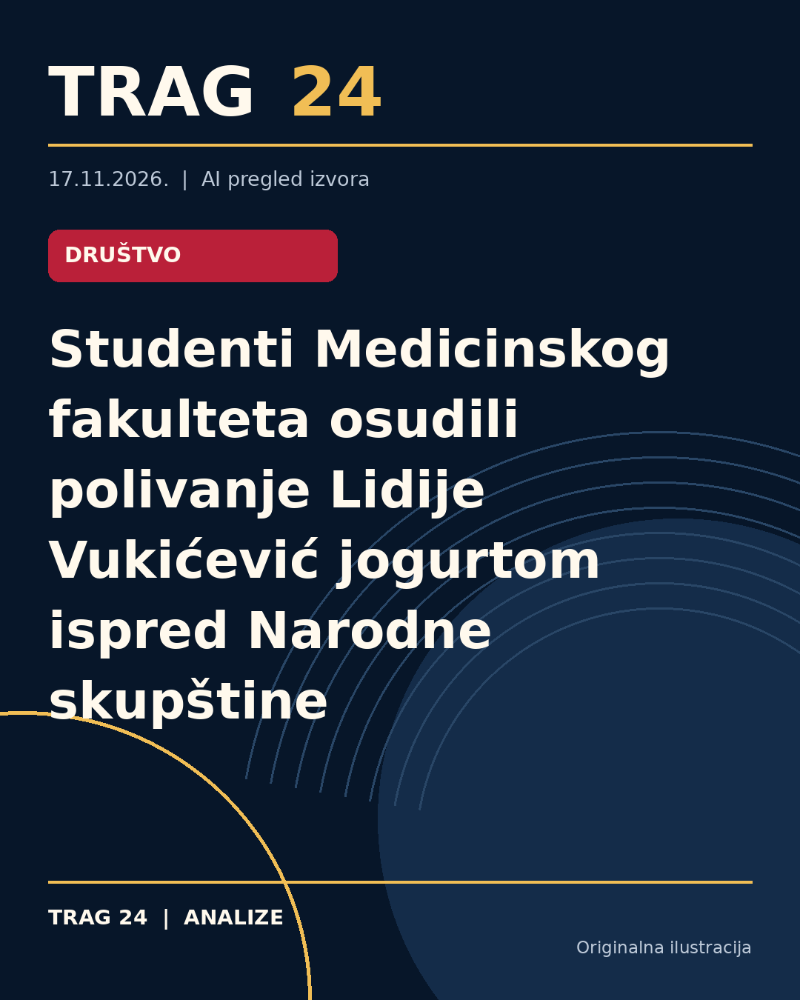

Studenti Medicinskog fakulteta osudili polivanje Lidije Vukićević jogurtom ispred Narodne skupštine

ŠTA SE DOGODILO
Jutros ispred doma Narodne skupštine došlo je do incidenta u kome je bivša sekretarka beogradskog Medicinskog fakulteta Marija Radovanović polila jogurtom poslanicu Srpske napredne stranke Lidiju Vukićević. Lidija Vukićević se tada kretala kroz masu okupljenih građana, a nakon ulaska u Skupštinu izjavila je da je zbog tog postupka bila uznemirena i uplakana.
HRONOLOGIJA
Incident se dogodio neposredno pre početka konstitutivne sednice Skupštine Srbije. Marija Radovanović je neposredno prišla Lidiji Vukićević i polila je jogurtom po glavi. Nakon što se ovaj čin dogodio, studenti Medicinskog fakulteta Univerziteta u Beogradu, čiji je Radovanović bila zaposlena, oglasili su se saopštenjem na društvenim mrežama, dok su njeni advokati otkazali punomoćje zbog posledica incidenta.
ŠTA NAVODE IZVORI
Svi izvori prenose da je Marija Radovanović polila jogurtom Lidiju Vukićević. Radovanović je za medij Danas navela da nije planirala taj čin, već je na njega reagovala u afektu zbog događaja prethodnih dana. Studenti Medicinskog fakulteta su saopštili da postupak nije u skladu sa vrednostima koje oni zastupaju i pozvali na mirno i dostojanstveno ponašanje prema svima, bez obzira na političku pripadnost. Advokati Pištaljke, koji su zastupali Radovanović u sporu vezanom za uzbunjivanje, odlučili su da joj otkažu punomoćje.
ŠTA JE POTVRĐENO
Potvrđeno je da je Marija Radovanović polila jogurtom poslanicu Lidiju Vukićević ispred Skupštine. Incident je izazvao reakcije studenata Medicinskog fakulteta koji su se jasno ogradili od postupka bivše zaposlene. Takođe, potvrđeno je da su advokati otkazali punomoćje Radovanović zbog posledica incidenta.
ŠTA NIJE POTVRĐENO
Nije potvrđeno da li će doći do formalnih disciplinskih ili pravnih sankcija protiv Marije Radovanović. Takođe, nije poznato da li je bilo drugih podrobnosti koje su dovele do njenog postupka osim njenog navoda da je reagovala iz afekta.
ŠTA OSTАJE OTVORENO: Ostaje nejasno kako će ovaj incident uticati na dalje aktivnosti samih aktera i na odnose u institucijama sa kojima su povezani. Takođe, ostaje otvoreno pitanje političkih i društvenih reakcija nakon ovog događaja i moguće posledice po Radovanović u njenim daljim angažmanima.
Izvori
- https://www.kurir.rs/vesti/politika/10164642/studenti-medicinskog-fakulteta-osudili-napad-na-lidiju-vukicevic
- https://n1info.rs/vesti/studenti-medicinskog-fakulteta-o-polivanju-lidije-vukicevic-jogurtom-to-nije-u-skladu-s-vrednostima-za-koje-se-zalazemo/
- https://www.danas.rs/vesti/drustvo/studenti-medicinskog-fakulteta-o-postupku-marije-radovanovic-to-nije-u-skladu-s-vrednostima-za-koje-se-zalazemo/
Ova analiza je pripremljena uz pomoć veštačke inteligencije na osnovu javno dostupnih izvora. Navodi izvora nisu nužno nezavisno potvrđeni.